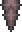
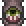
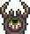

The World Feeder is a worm like enemy that appears in The Corruption after defeating the Wall of Flesh. It drops a small amount of Cursed Flames on death. They are somewhat rare and are not as common as Devourers were before defeating the Wall of Flesh. They look like the devourers except they are longer, have more body parts, have an eye on each bodypart, and the eye on their head is bloodshot. They resemble a smaller Eater of Worlds although they do not reproduce upon death. Killing this enemy will enable you to craft weapons such as the Dao of Pow, the Cursed Flames Book and even a Magical Harp, although alternatively, you can kill any Underground Corruption enemy, or even Goblins, to get the Soul of Night. Getting the Cursed Flame is the easiest to get from the World Feeder since it has a 100% chance of dropping the Cursed Flame (and it drops lots of it). Strangely enough, the World Feeder is smaller than the Eater of Worlds, but it does more than three times its damage.
It drops loot from a head segment, therefore it can get stuck deeply in blocks.
Segments
| World Feeder Tail |
|---|
|  |
|---|
| Statistics |
|---|
| |
| Damage | 40 |
| Defense | 44 |
| World Feeder Body |
|---|
|  |
|---|
| Statistics |
|---|
| |
| Damage | 55 |
| Defense | 40 |
| World Feeder Head |
|---|
|  |
|---|
| Statistics |
|---|
| |
| Damage | 70 |
| Defense | 36 |
Notes
- Note that the World Feeder in the preview only has a fraction of its bodyparts. The actual one is much, much longer, it has about 4-5 times more body parts than the preview
History